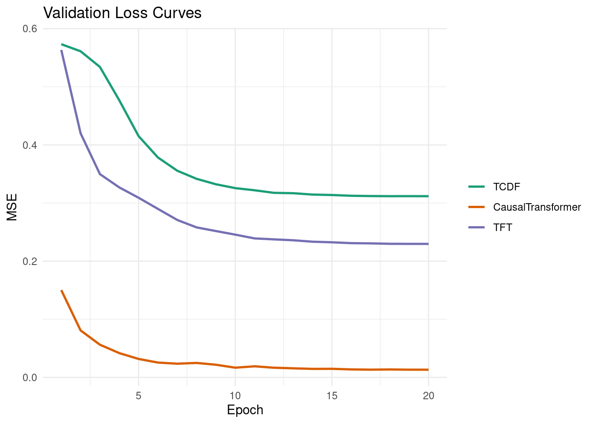
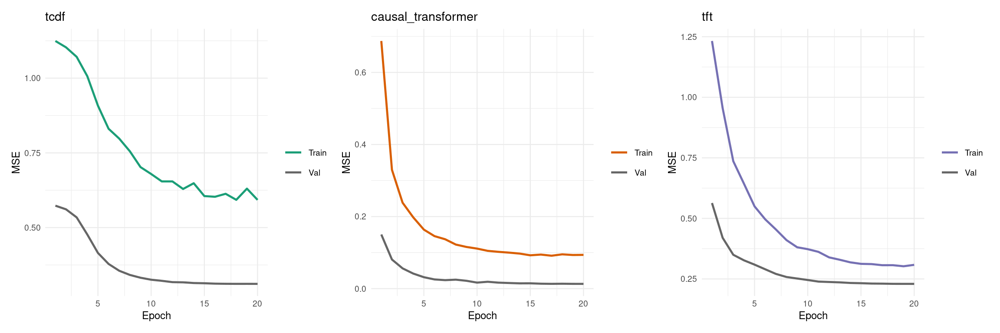
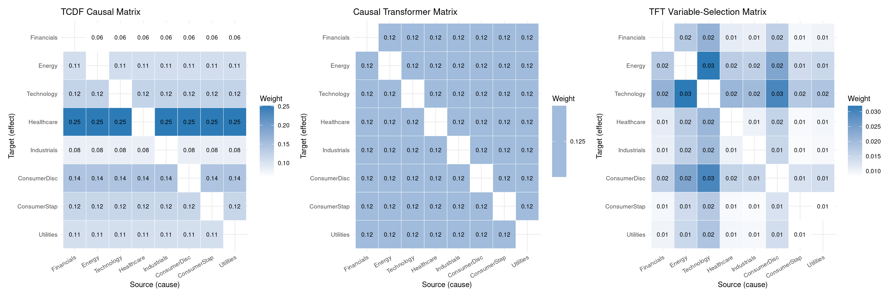
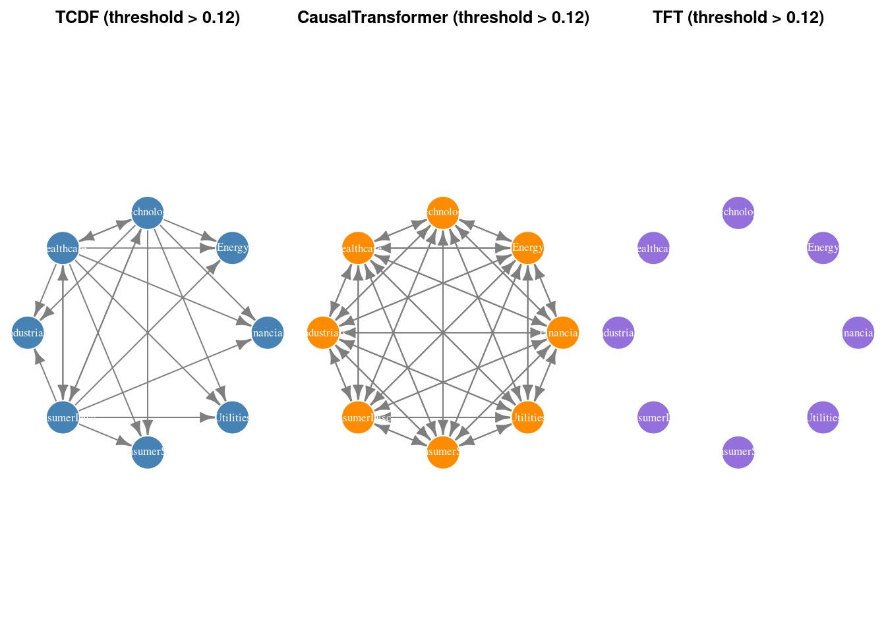
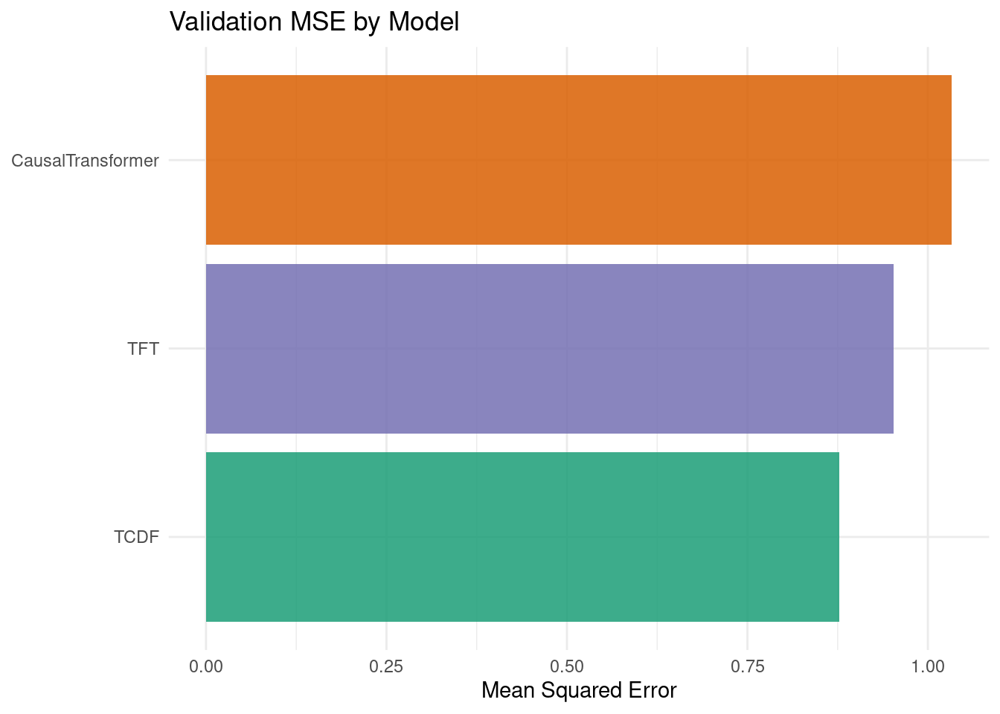
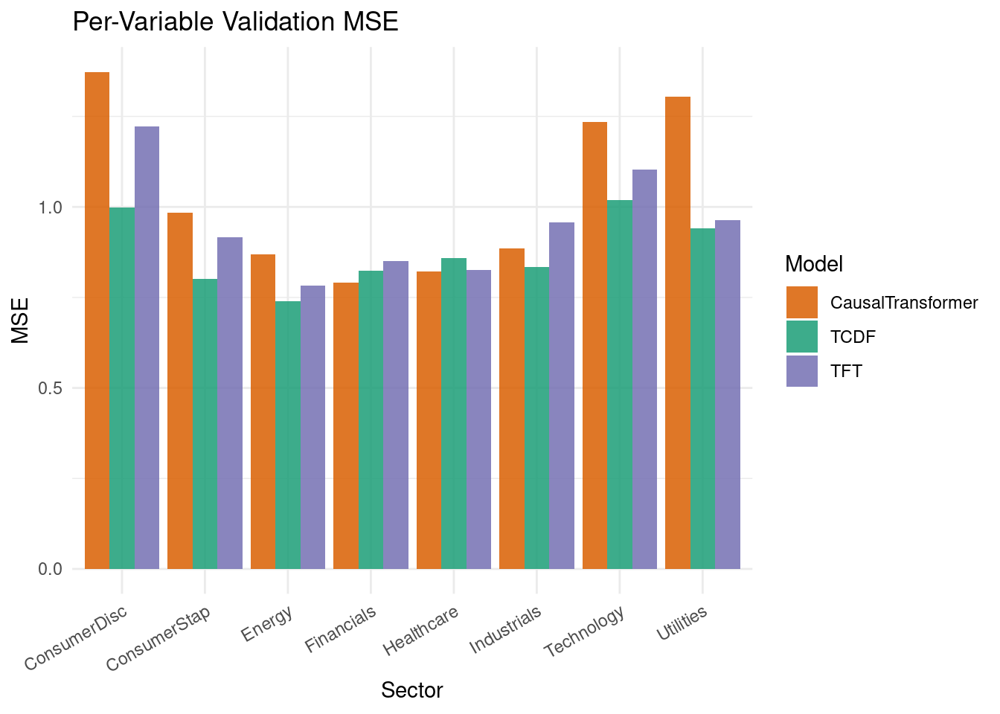

packages <- c(
'tidyverse',
'plyr',
'RCausalML',
'torch',
'tidyquant',
'reshape2',
'scales',
'patchwork',
'igraph'
)Attention-Based / Transformer Causal Models
Attention mechanisms compute pairwise relevance scores between all time steps and variables simultaneously, creating a natural inductive structure for causal discovery:
- Temporal attention → which past time steps influence the present (lag selection)
- Variable attention → which variables influence which (causal graph)
- Causal masking → structural constraint preventing future information leakage
The self-attention score between query \(q_i\) and key \(k_j\):
\[ \alpha_{ij} = \frac{\exp\!\left(q_i^\top k_j / \sqrt{d_k}\right)}{\sum_l \exp\!\left(q_i^\top k_l / \sqrt{d_k}\right)} \]
When interpreted causally, \(\alpha_{ij}\) approximates the influence of variable/time \(j\) on variable/time \(i\).
The Three Models
TCDF — Temporal Causal Discovery Framework
TCDF (Nauta et al., 2019) uses depthwise separable causal convolutions + self-attention to discover time-delayed causal relationships.
Key ideas:
- Dilated causal convolutions: receptive field grows exponentially with depth without data leakage — each output depends only on past inputs.
- Attention mechanism: scores which input channels (variables) contribute most to each target variable.
- Causal discovery: for target \(Y_i\), trains a separate network; variables with high attention weights are declared causal parents.
The convolution at dilation \(r\):
\[\text{Conv}(x, t) = \sum_{k=0}^{K-1} w_k \cdot x(t - r \cdot k)\]
Causal mask ensures \(x(t - r \cdot k)\) uses only past values (\(k \geq 0\), never \(k < 0\)).
Causal Transformer
A Transformer with three structural modifications that enforce causal reasoning:
- Autoregressive masking: upper-triangular mask on attention so position \(t\) only attends to positions \(\leq t\).
- Inter-variable attention head: separate attention heads dedicated to cross-variable influence, whose weights are extracted as the causal graph.
- Positional encoding: sinusoidal temporal embeddings that encode lag distance.
The causal attention output:
\[\text{CausalAttn}(Q, K, V) = \text{softmax}\!\left(\frac{QK^\top}{\sqrt{d_k}} + M_{\text{causal}}\right) V\]
where \(M_{\text{causal}}[i,j] = -\infty\) if \(j > i\), else \(0\).
TFT — Temporal Fusion Transformer
TFT (Lim et al., 2021, Google) is the state-of-the-art architecture for interpretable multi-horizon forecasting. Its causal structure comes from:
- Variable Selection Networks (VSN): soft gating that selects which input variables are relevant at each time step — directly interpretable as variable-level causal weights.
- Gated Residual Networks (GRN): nonlinear transformation with skip connections and gating for stable training.
- Multi-head attention with interpretable weights: attention across time steps, averaged across heads to produce temporal importance scores.
TFT architecture flow:
Input variables
│
▼
Variable Selection Network ← learns which vars matter (causal weights)
│
▼
LSTM Encoder/Decoder ← captures local temporal dynamics
│
▼
Multi-Head Self-Attention ← captures long-range dependencies
│
▼
Gated Residual + LayerNorm ← stabilize gradients
│
▼
Output Head ← one-step-ahead forecast per variableImplementation in R
We use {RCausalML}’s attn_causal_model() function (and its convenience wrappers tcdf_model(), causal_transformer_model(), tft_model()) to fit all three architectures on S&P 500 sector ETF daily log-return data (2018–2024).
Load and Check Required Libraries
Install Missing Packages
# Install missing packages
#new_packages <- packages[!(packages %in% installed.packages()[,"Package"])]
#if(length(new_packages)) install.packages(new_packages)Verify Installation
cat("Installed packages:\n")Installed packages:print(sapply(packages, requireNamespace, quietly = TRUE))tidyverse plyr RCausalML torch tidyquant reshape2 scales patchwork
TRUE TRUE TRUE TRUE TRUE TRUE TRUE TRUE
igraph
TRUE Load Required Libraries
# When rendering from package root, use local RCausalML
if (file.exists("DESCRIPTION") && requireNamespace("devtools", quietly = TRUE)) {
try(devtools::load_all(".", quiet = TRUE), silent = TRUE)
}
invisible(lapply(packages, function(pkg) {
suppressPackageStartupMessages(library(pkg, character.only = TRUE))
}))set.seed(42)
device_use <- NULL
if (requireNamespace("torch", quietly = TRUE)) {
device_use <- if (torch::cuda_is_available()) "cuda" else "cpu"
torch::torch_manual_seed(42)
}
cat(sprintf("Using device: %s\n", device_use))Using device: cudaData Loading and Preprocessing
This section downloads S&P 500 sector ETF prices (the same universe used in the companion notebooks), converts them to standardized log-returns, and builds lagged input/output arrays for training.
Note: If online market data is unavailable, the notebook automatically falls back to synthetic demo data so all downstream cells remain runnable.
TICKERS <- c(
"XLF" = "Financials",
"XLE" = "Energy",
"XLK" = "Technology",
"XLV" = "Healthcare",
"XLI" = "Industrials",
"XLY" = "ConsumerDisc",
"XLP" = "ConsumerStap",
"XLU" = "Utilities"
)
fetch_close_prices <- function(tickers, start = "2018-01-01", end = "2024-01-01") {
tryCatch({
raw <- tidyquant::tq_get(names(tickers), get = "stock.prices",
from = start, to = end, complete_cases = TRUE)
if (is.null(raw) || nrow(raw) == 0) return(NULL)
raw |>
dplyr::select(symbol, date, adjusted) |>
tidyr::pivot_wider(names_from = symbol, values_from = adjusted) |>
dplyr::arrange(date) |>
tidyr::drop_na()
}, error = function(e) NULL)
}
close_wide <- fetch_close_prices(TICKERS)
if (is.null(close_wide) || nrow(close_wide) < 30) {
message("Warning: market data unavailable; using synthetic demo data.")
set.seed(42)
n_steps <- 1600L
d_syn <- length(TICKERS)
A_syn <- matrix(0, d_syn, d_syn)
for (i in seq_len(d_syn)) {
A_syn[i, i] <- 0.45
if (i > 1) A_syn[i, i - 1] <- 0.25
if (i > 2 && i %% 2 == 1) A_syn[i, i - 2] <- 0.15
}
x_syn <- matrix(0, n_steps, d_syn)
x_syn[1, ] <- rnorm(d_syn)
noise_syn <- 0.15 * matrix(rnorm(n_steps * d_syn), n_steps, d_syn)
for (t in seq(2L, n_steps)) x_syn[t, ] <- x_syn[t - 1L, ] %*% t(A_syn) + noise_syn[t, ]
returns_df <- as.data.frame(x_syn)
colnames(returns_df) <- unname(TICKERS)
data_np <- scale(x_syn)
} else {
price_mat <- as.matrix(close_wide[, names(TICKERS)])
log_ret <- log(price_mat[-1L, ] / price_mat[-nrow(price_mat), ])
colnames(log_ret) <- unname(TICKERS[colnames(price_mat)])
returns_df <- as.data.frame(log_ret)
data_np <- scale(log_ret)
}
VAR_NAMES <- colnames(data_np)
d <- ncol(data_np)
Tt <- nrow(data_np)
cat(sprintf("d=%d variables, T=%d\n", d, Tt))d=8 variables, T=1508cat("Variables:", paste(VAR_NAMES, collapse = ", "), "\n")Variables: Financials, Energy, Technology, Healthcare, Industrials, ConsumerDisc, ConsumerStap, Utilities LAG <- 20L
AHEAD <- 1L
build_lag_dataset <- function(data, lag, ahead = 1L) {
N <- nrow(data) - lag - ahead + 1L
x_seq <- array(NA_real_, dim = c(N, lag, ncol(data)))
y_mat <- matrix(NA_real_, nrow = N, ncol = ncol(data))
for (t in seq_len(N)) {
x_seq[t, , ] <- data[t:(t + lag - 1L), , drop = FALSE]
y_mat[t, ] <- data[t + lag + ahead - 1L, ]
}
list(x_seq = x_seq, y_mat = y_mat)
}
lag_data <- build_lag_dataset(data_np, LAG, AHEAD)
X_seq <- lag_data$x_seq
Y_mat <- lag_data$y_mat
split <- floor(0.8 * nrow(X_seq))
X_tr <- X_seq[seq_len(split), , ]
X_val <- X_seq[(split + 1L):nrow(X_seq), , ]
Y_tr <- Y_mat[seq_len(split), ]
Y_val <- Y_mat[(split + 1L):nrow(Y_mat), ]
cat(sprintf("Train: (%d, %d, %d) Val: (%d, %d, %d)\n",
dim(X_tr)[1], dim(X_tr)[2], dim(X_tr)[3],
dim(X_val)[1], dim(X_val)[2], dim(X_val)[3]))Train: (1190, 20, 8) Val: (298, 20, 8)Model Architectures Overview
In this section, we describe the three attention-based neural network models implemented in {RCausalML} and fitted using attn_causal_model(). Each architecture is designed for multivariate time-series causal inference.
Causal Dilated Conv Block (used by TCDF)
The foundational building block for TCDFNet is a causal dilated convolutional block:
- A 1-D convolution with dilation \(2^i\) at layer \(i\) (exponentially growing receptive field).
- Left-only padding ensures no future leakage.
- LayerNorm over features + GELU nonlinearity.
In R (via {torch}), the internal .deepnet_attn_tcdf_net() constructor stacks n_layers such blocks, then applies a linear attention projection head and a two-layer MLP prediction head.
CausalTransformer
The R implementation of CausalTransformer:
- Input projection: linear map from \(d\) variables to \(d_{\text{model}}\) dimensions.
- Sinusoidal positional encoding: adds temporal position information.
- Causal TransformerEncoder: standard multi-head self-attention with an upper-triangular mask (causal masking).
- Cross-variable attention head: separate
nn_multihead_attention()that computes inter-variable attention — averaged weights form the causal matrix. - Per-variable GRN + linear heads: one Gated Residual Network and linear layer per output variable.
TFTNet (Temporal Fusion Transformer)
The R implementation of TFTNet:
- Variable Selection Network (VSN): per-variable GRNs produce embeddings; a context GRN produces soft selection weights — these weights are the variable-level causal importances.
- Temporal projection + LSTM encoder: projects \(d\) variables to \(d_{\text{model}}\) then runs an LSTM.
- Causal multi-head attention: LSTM outputs attend to each other with a causal mask.
- Final GRN + linear head: combines LSTM context with VSN context through a GRN before the prediction head.
- Causal matrix: outer product of mean VSN weights \(\rightarrow\) variable-to-variable causal matrix.
Fit All Three Models
attn_causal_model() is the single entry point that fits TCDF, CausalTransformer, and TFT in sequence. Internally it:
- Builds windowed (lag, d) input/output tensors.
- Trains each model with AdamW + cosine LR schedule + early stopping.
- Applies an optional sparsity penalty \(\lambda_{\text{sparse}}\) on attention weights.
- Extracts the \(d \times d\) causal matrix from each trained model.
cat("Fitting TCDF, CausalTransformer, and TFT ...\n")Fitting TCDF, CausalTransformer, and TFT ...attn_fit <- attn_causal_model(
data = data_np,
lag = LAG,
models = c("tcdf", "causal_transformer", "tft"),
hidden = 48L,
d_model = 64L,
n_heads = 4L,
n_layers = 4L,
dropout = 0.1,
epochs = 20L,
lr = 3e-4,
patience = 6L,
lam_sparse = 1e-4,
batch_size = 64L,
val_split = 0.2,
device = device_use,
verbose = TRUE
)
cat("\nTraining complete.\n")
Training complete.cat("Validation MSE:\n")Validation MSE:print(round(attn_fit$val_mse, 6)) tcdf causal_transformer tft
0.311805 0.013286 0.229753 Validation MSE Summary Table
val_mse_df <- data.frame(
Model = names(attn_fit$val_mse),
Val_MSE = unname(attn_fit$val_mse)
) |> dplyr::arrange(Val_MSE)
print(val_mse_df) Model Val_MSE
1 causal_transformer 0.01328565
2 tft 0.22975338
3 tcdf 0.31180525Training Loss Curves
# Collect validation loss histories from all three models
hist_list <- attn_fit$histories
make_loss_df <- function(nm) {
h <- hist_list[[nm]]
if (is.null(h)) return(NULL)
data.frame(
epoch = seq_along(h$val),
val = h$val,
train = h$train,
model = nm
)
}
loss_df <- dplyr::bind_rows(lapply(names(hist_list), make_loss_df))
loss_df$model <- factor(loss_df$model,
levels = c("tcdf", "causal_transformer", "tft"),
labels = c("TCDF", "CausalTransformer", "TFT"))
ggplot(loss_df, aes(x = epoch, y = val, colour = model)) +
geom_line(linewidth = 0.9) +
scale_colour_manual(values = c(
"TCDF" = "#1b9e77",
"CausalTransformer" = "#d95f02",
"TFT" = "#7570b3"
)) +
labs(
title = "Validation Loss Curves",
x = "Epoch",
y = "MSE",
colour = NULL
) +
theme_minimal()
Training vs. Validation Loss per Model
plot_model_loss <- function(nm, colour) {
h <- hist_list[[nm]]
if (is.null(h)) return(NULL)
df <- data.frame(
epoch = seq_along(h$val),
Train = h$train,
Val = h$val
) |> tidyr::pivot_longer(-epoch, names_to = "split", values_to = "loss")
ggplot(df, aes(x = epoch, y = loss, colour = split)) +
geom_line(linewidth = 0.85) +
scale_colour_manual(values = c("Train" = colour, "Val" = "grey40")) +
labs(title = nm, x = "Epoch", y = "MSE", colour = NULL) +
theme_minimal(base_size = 9)
}
p1 <- plot_model_loss("tcdf", "#1b9e77")
p2 <- plot_model_loss("causal_transformer","#d95f02")
p3 <- plot_model_loss("tft", "#7570b3")
patchwork::wrap_plots(p1, p2, p3, ncol = 3)
Causal Matrix Visualization
For each model, the learned causal matrix \(C \in \mathbb{R}^{d \times d}\) encodes variable-to-variable influence as learned through attention weights:
- TCDF: the softmax attention projection head averaged over validation batches.
- CausalTransformer: the inter-variable cross-attention matrix averaged over validation batches.
- TFT: the outer product of mean VSN variable-selection weights.
C_tcdf <- causal_matrix_attn(attn_fit, model = "tcdf")
C_ctrf <- causal_matrix_attn(attn_fit, model = "causal_transformer")
C_tft <- causal_matrix_attn(attn_fit, model = "tft")
cat("TCDF causal matrix (first 3 rows):\n")TCDF causal matrix (first 3 rows):print(round(C_tcdf[1:3, ], 4)) Financials Energy Technology Healthcare Industrials ConsumerDisc
Financials 0.0632 0.0632 0.0632 0.0632 0.0632 0.0632
Energy 0.1084 0.1084 0.1084 0.1084 0.1084 0.1084
Technology 0.1234 0.1234 0.1234 0.1234 0.1234 0.1234
ConsumerStap Utilities
Financials 0.0632 0.0632
Energy 0.1084 0.1084
Technology 0.1234 0.1234Heatmap Comparison
plot_causal_heatmap <- function(C, title, var_names) {
A <- as.matrix(C)
diag(A) <- NA_real_
rownames(A) <- var_names
colnames(A) <- var_names
df <- reshape2::melt(A, na.rm = TRUE)
colnames(df) <- c("Target", "Source", "Weight")
df$Target <- factor(df$Target, levels = rev(var_names))
df$Source <- factor(df$Source, levels = var_names)
ggplot(df, aes(x = Source, y = Target, fill = Weight)) +
geom_tile(colour = "white") +
geom_text(aes(label = round(Weight, 2)), size = 2.5, colour = "black") +
scale_fill_gradient(low = "white", high = "#2C7BB6",
na.value = "grey90", name = "Weight") +
labs(title = title, x = "Source (cause)", y = "Target (effect)") +
theme_minimal(base_size = 9) +
theme(axis.text.x = element_text(angle = 30, hjust = 1))
}
p_tcdf <- plot_causal_heatmap(C_tcdf, "TCDF Causal Matrix", VAR_NAMES)
p_ctrf <- plot_causal_heatmap(C_ctrf, "Causal Transformer Matrix", VAR_NAMES)
p_tft <- plot_causal_heatmap(C_tft, "TFT Variable-Selection Matrix", VAR_NAMES)
patchwork::wrap_plots(p_tcdf, p_ctrf, p_tft, ncol = 3)
Causal Graph Network Diagrams
draw_attn_igraph <- function(C, title, var_names, threshold = 0.12,
node_colour = "steelblue") {
A_bin <- (as.matrix(C) > threshold) * 1L
diag(A_bin) <- 0L
g <- igraph::graph_from_adjacency_matrix(
A_bin, mode = "directed", weighted = NULL, diag = FALSE
)
igraph::V(g)$name <- var_names
igraph::V(g)$color <- node_colour
igraph::V(g)$label <- var_names
igraph::V(g)$size <- 28
igraph::V(g)$label.color <- "white"
igraph::V(g)$label.cex <- 0.8
igraph::E(g)$color <- "grey50"
igraph::E(g)$arrow.size <- 0.6
old_par <- par(mar = c(0, 0, 2, 0))
plot(g,
layout = igraph::layout_in_circle(g),
main = title,
vertex.frame.color = "white")
par(old_par)
}
par(mfrow = c(1, 3))
draw_attn_igraph(C_tcdf, "TCDF (threshold > 0.12)", VAR_NAMES, 0.12, "steelblue")
draw_attn_igraph(C_ctrf, "CausalTransformer (threshold > 0.12)", VAR_NAMES, 0.12, "darkorange")
draw_attn_igraph(C_tft, "TFT (threshold > 0.12)", VAR_NAMES, 0.12, "mediumpurple")
par(mfrow = c(1, 1))Graph Statistics
graph_stats_attn <- function(C, threshold = 0.12, name = "") {
A_bin <- (as.matrix(C) > threshold) * 1L
diag(A_bin) <- 0L
g <- igraph::graph_from_adjacency_matrix(
A_bin, mode = "directed", weighted = NULL, diag = FALSE
)
d_n <- igraph::gorder(g)
e_n <- igraph::gsize(g)
dens <- if (d_n > 1) e_n / (d_n * (d_n - 1)) else 0.0
data.frame(
model = name,
nodes = d_n,
edges = e_n,
density = round(dens, 4),
is_dag = igraph::is_dag(g),
max_in_degree = if (d_n > 0) max(igraph::degree(g, mode = "in")) else 0L,
max_out_degree = if (d_n > 0) max(igraph::degree(g, mode = "out")) else 0L
)
}
stats_all <- do.call(rbind, list(
graph_stats_attn(C_tcdf, 0.12, "TCDF"),
graph_stats_attn(C_ctrf, 0.12, "CausalTransformer"),
graph_stats_attn(C_tft, 0.12, "TFT")
))
rownames(stats_all) <- NULL
cat("Graph statistics (threshold = 0.12):\n")Graph statistics (threshold = 0.12):print(stats_all) model nodes edges density is_dag max_in_degree max_out_degree
1 TCDF 8 21 0.375 FALSE 3 7
2 CausalTransformer 8 56 1.000 FALSE 7 7
3 TFT 8 0 0.000 TRUE 0 0Model Validation: Prediction Error on Held-Out Data
pred_tcdf <- predict(attn_fit, model = "tcdf", newdata = X_val)
pred_ctrf <- predict(attn_fit, model = "causal_transformer", newdata = X_val)
pred_tft <- predict(attn_fit, model = "tft", newdata = X_val)
mse_tcdf <- mean((pred_tcdf - Y_val)^2)
mse_ctrf <- mean((pred_ctrf - Y_val)^2)
mse_tft <- mean((pred_tft - Y_val)^2)
val_df <- data.frame(
model = c("TCDF", "CausalTransformer", "TFT"),
val_mse = c(mse_tcdf, mse_ctrf, mse_tft)
)
cat("Validation MSE (next-step reconstruction):\n")Validation MSE (next-step reconstruction):print(val_df) model val_mse
1 TCDF 0.8769762
2 CausalTransformer 1.0331640
3 TFT 0.9528924ggplot(val_df, aes(x = reorder(model, val_mse), y = val_mse, fill = model)) +
geom_col(show.legend = FALSE, alpha = 0.85) +
scale_fill_manual(values = c(
"TCDF" = "#1b9e77",
"CausalTransformer" = "#d95f02",
"TFT" = "#7570b3"
)) +
coord_flip() +
labs(
title = "Validation MSE by Model",
x = NULL,
y = "Mean Squared Error"
) +
theme_minimal()
Per-Variable Prediction Error
per_var_mse <- data.frame(
variable = VAR_NAMES,
TCDF = colMeans((pred_tcdf - Y_val)^2),
CausalTransformer = colMeans((pred_ctrf - Y_val)^2),
TFT = colMeans((pred_tft - Y_val)^2)
)
cat("Per-variable MSE:\n")Per-variable MSE:print(data.frame(
variable = per_var_mse$variable,
round(per_var_mse[, -1], 5)
)) variable TCDF CausalTransformer TFT
1 Financials 0.82300 0.79124 0.85009
2 Energy 0.73883 0.86958 0.78209
3 Technology 1.01885 1.23502 1.10403
4 Healthcare 0.85969 0.82246 0.82654
5 Industrials 0.83421 0.88577 0.95766
6 ConsumerDisc 0.99819 1.37302 1.22227
7 ConsumerStap 0.80154 0.98360 0.91664
8 Utilities 0.94149 1.30461 0.96382pv_long <- tidyr::pivot_longer(per_var_mse, -variable,
names_to = "model", values_to = "mse")
ggplot(pv_long, aes(x = variable, y = mse, fill = model)) +
geom_col(position = "dodge", alpha = 0.85) +
scale_fill_manual(values = c(
"TCDF" = "#1b9e77",
"CausalTransformer" = "#d95f02",
"TFT" = "#7570b3"
)) +
labs(
title = "Per-Variable Validation MSE",
x = "Sector",
y = "MSE",
fill = "Model"
) +
theme_minimal() +
theme(axis.text.x = element_text(angle = 30, hjust = 1))
Notes and Extensions
- This notebook is a pedagogical implementation of three complementary attention-based causal discovery approaches on real-world time-series data.
- The learned causal matrices are soft attention weights, not formal causal estimates — further validation and domain expertise are needed before drawing scientific or policy conclusions.
- Hyperparameters (
LAG,hidden,d_model,n_heads,lam_sparse, threshold) strongly affect the discovered structure; sensitivity analysis is essential. - For stronger causal claims, combine with domain priors, interventional validation, and bootstrap uncertainty quantification.
- Possible extensions:
- Sparse attention regularization: increase
lam_sparseto promote sparser, more interpretable graphs. - Multi-horizon forecasting: extend
AHEAD > 1for multi-step prediction. - Graph pruning: apply statistical significance tests or bootstrap confidence intervals on the attention weights.
- Hybrid models: combine TCDF’s convolutional feature extraction with the Transformer’s global attention.
- Sparse attention regularization: increase
Summary and Conclusions
In this notebook, we explored three deep learning-based approaches to causal discovery via attention mechanisms on S&P 500 sector ETF multivariate time-series:
TCDF uses stacked causal dilated convolutions to extract temporal features, then applies an attention projection head to score variable-to-variable influence. Its convolutional backbone provides stable, efficient training with linear time complexity in the sequence length.
CausalTransformer employs a standard Transformer encoder with autoregressive causal masking and a dedicated cross-variable attention head. The cross-variable attention matrix directly encodes inferred causal structure and is interpretable as a soft adjacency matrix.
TFT (Temporal Fusion Transformer) combines variable selection networks, LSTM sequential encoding, and interpretable multi-head temporal attention. The VSN selection weights provide an outer-product variable causal matrix that captures which input variables drive predictions.
Key takeaways:
- Attention-based models offer a flexible, differentiable means for data-driven discovery of temporal causal structure without requiring a pre-specified graph.
- The causal (attention) matrix from each model provides an interpretable estimate of variable-to-variable influence that can be thresholded and visualized as a directed graph.
- TCDF’s convolutional approach is computationally efficient; CausalTransformer’s global attention captures long-range dependencies; TFT’s VSN provides an explicit variable importance ranking.
- All three models are unified under {RCausalML}’s
attn_causal_model()interface with minimal setup, enabling direct comparison on the same dataset. - Attention weights are not formal causal estimates — they reflect learned predictive associations that are consistent with causal structure, but require experimental validation for causal claims.
Resources
Primary References
- TCDF (2019): Causal Discovery with Attention-Based Convolutional Neural Networks — Nauta et al.; the TCDF architecture combining dilated causal convolutions with attention for causal graph discovery.
- TFT (2021): Temporal Fusion Transformers for Interpretable Multi-Horizon Time Series Forecasting — Lim et al.; the TFT architecture with variable selection networks and interpretable attention.
- Attention Is All You Need (2017): Vaswani et al. — the original Transformer paper introducing scaled dot-product attention and multi-head attention.
Background Texts
- Causality (Judea Pearl): Causality: Models, Reasoning and Inference — definitive reference for structural causal models and Pearl’s Ladder of Causation.
- Elements of Causal Inference (Peters, Janzing & Schölkopf): MIT Press — rigorous treatment of SCMs and identifiability.
- The Book of Why (J. Pearl & D. Mackenzie) — accessible introduction to causal reasoning.
Software and Datasets
- TCDF GitHub: github.com/M-Nauta/TCDF — original Python TCDF implementation.
- R torch: https://torch.mlverse.org/ — PyTorch bindings for R used by {RCausalML}.
- tidyquant: https://business-science.github.io/tidyquant/ — tidy finance data retrieval.
- awesome-causal-inference: github.com/imirzadeh/awesome-causal-inference — curated resource list.
Companion Notebooks in This Series
05-04-01-DeepCausalML-timeseries-neural-granger-cusuality-r.qmd— Neural Granger Causality (cMLP, cLSTM, SRU, NRI) on the same sector ETF universe.05-04-02-DeepCausalML-timeseries-structural-causal-model-SMC-r.qmd— Deep Structural Causal Models: DeepSCM, DECI, DYNOTEARS on sector ETF data.05-03-05-DeepCausalML-causal-structural-learning-regularization-CASTLE-r.qmd— CASTLE: simultaneous supervised prediction and causal graph discovery.05-03-04-DeepCausalML-DAGMA-NoCurl-r.qmd— DAGMA and DAG-NoCurl: acyclicity via log-det and curl-free constraints.
Scientific Terminology for Beginners
| Term | Simple explanation | Beginner example |
|---|---|---|
| Attention mechanism | A learned weighting that tells the model which inputs to focus on most. | Like highlighting important sentences in a textbook. |
| Causal masking | Restricting attention so each time step only sees past information, not future. | Predicting tomorrow’s price using only today’s and yesterday’s data. |
| Dilated convolution | A convolution that skips inputs by a factor (dilation), increasing the receptive field exponentially. | Reading every 2nd, then every 4th word to understand context across longer sequences. |
| Positional encoding | A vector added to each time step’s embedding encoding its position in the sequence. | Adding a timestamp to each data point so the model knows temporal order. |
| Variable Selection Network (VSN) | A learned soft gate that scores how important each input variable is. | Automatically highlighting which financial indicators drive a forecast. |
| Gated Residual Network (GRN) | A feedforward block with a sigmoid gate and skip connection, stabilizing gradient flow. | A weighted shortcut that decides how much of the transformation to apply. |
| Causal (attention) matrix | A \(d \times d\) matrix whose \((i,j)\) entry reflects how much variable \(j\) influences variable \(i\) according to learned attention weights. | A table showing “who talks to whom” in a network of variables. |
| Early stopping | Halting training when validation loss stops improving, preventing overfitting. | Stopping practice when further rehearsal no longer improves performance. |
| AdamW | Adam optimizer with decoupled weight decay regularization. | Gradient descent that adapts learning rates per parameter and penalizes large weights. |
| Cosine annealing | A learning-rate schedule that decays the LR following a cosine curve. | Gradually slowing down training as you approach convergence. |
| Lag / window | Number of past time steps used as input to the model. | Using the last 20 trading days to predict the next day’s return. |